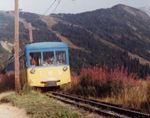

les Transports Publics en été
Pour les transports en Haute Savoie, voir pages 24 et 25.

- les 3 trains sont à crémaillère,
- départs matinaux pour les alpinistes en haute saison au train du Montenvers (train des alpinistes à 7 h) et au télé de l'Aiguille du Midi.
Pour les transports en Savoie :
Gare SNCF à Bourg Saint-Maurice (08 36 67 68 69 ou www.sncf.fr)
Autocars MARTIN, BP 3, place de la Gare, 73703 Bourg Saint-Maurice cedex, 04 79 07 04 49, qui dessert Séez, la Rosière et le Petit Saint-Bernard.
Pour information, quelques horaires 1999 :
- Séez plusieurs fois chaque jour, notamment montée à 8 h et 18 h 30, descente à 10 h 20 (9 h 30 en week-end) et 20 h 35 (20 h 05 le samedi).
- la Rosière les mardi, mercredis et samedis uniquement, notamment montée à 8 h et 18 h 30, descente à 9 h 30 et le soir.
- le col du Petit Saint-Bernard et Aoste (foire du mardi) le mardi, montée à 8 h et descente à 17 h 30.
Pour les transports en Italie :
Gare à Pré Saint-Didier
Autocars pour Courmayeur, Entrèves et la Thuile
Navettes et bus en saison vers la quasi-totalité des terminus routiers